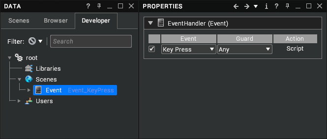

Using the Script Event System
This page gives an introduction to the script event system and registers.
Visionary Render can automatically generate common scripts using Events. To create an Event, right-click on a node in the tree and select Create > Event from the context menu. A default Key Press Event will be added to your scene as in the image below.

An Event consists of an EventHandler node with a child EventScript node. To edit the script, show the properties of the EventHandler node and click on the Script cell in the Action column. This will open the script in the Script Editor.
Note
Visionary Render provides a drag and drop interface to automatically generate some basic script actions. These are covered in the Visionary Render User Manual.
Guards
Guards permit you to set an extra condition to be met before a script is executed. A Guard may be one of the following:
Registers
Registers are global variables that can be accessed from your scripts. They appear as an autocomplete list when you type _ into the Script Editor. The following table describes the available registers:
Register | Type | Description |
|---|
__Event
| vrnode | The event node that was triggered (available in all events). |
__Gesture
| string | The name of the gesture that was made. |
__Hand
| boolean | The hand that triggered the event (right hand = true, left hand = false). |
__KeyCode
| number | The value of the key that was pressed. Tracker buttons start at 1000, mouse buttons start at 2000. |
__KeyState
| number | Whether the key in __KeyCode was pressed or released (1 = pressed). |
__Other
| vrnode | Event specific node. |
__Pose
| string | The name of the pose that was made. |
__PoseState
| boolean | The state of the pose (entered = true, exited = false). |
__Script
| vrnode | The script node containing the code being executed. This is available in all events. |
__Self
| vrnode | The node that the event node is attached to (e.g. an Assembly). This is available in all events. |
__Time
| number | The total number of seconds since the application started. This is available in all events. |
__TimeDelta
| number | The time in seconds since the last call to the event. |
__User
| vrnode | The user who triggered the event. This is available in all events. |
Events
There are various types of event that can trigger a script to execute. The table below lists the available events, and which event-specific registers are set. References to "the node" refer to the node to which the EventHandler is attached. The following types of event can be fired:
Event | Registers | Description |
|---|
Activate | __Other
| Fired when vrActivate is called. The caller of vrActivate can set the value of __Other to whatever is required inside this event. It is also triggered by double clicking on some node types in the tree. |
Break | __Other
| Fired when two objects stop touching each other in the scene. __Self is this object, __Other is the object that it touched. The guard condition can be set to an Assembly to only fire Break events for that Assembly instead of any node in the scene. Note: you’ll need to add a Collision node to __Self for this event to be fired. |
Click | | Fired when a 3D GUI item receives a full click (i.e. a press followed by a release). |
Create | | Fired when the node is created, loaded from file, or when the event script is compiled. |
Double Click | | Fired when a 3D GUI item receives a double click. |
Enter | | Fired when a fly-to operation arrives at the node. |
Gesture Activated | __Gesture
| Fired when a gesture is made that matches one of the recorded ones. |
Key Press | __KeyCode, __KeyState
| Fired when a key on the keyboard is pressed, or the mouse is clicked, or a tracker button is pressed. |
Key Release | __KeyCode, __KeyState
| Fired when a key, mouse, or tracker button is released. |
Leave | | Fired when a subsequent fly-to operation flies somewhere else. |
Move | | Fired when an assembly is moved in the scene. |
Pose Entered | __Pose, __PoseState
| Fired when a pose is made. |
Pose Left | __Pose, __PoseState
| Fired when a pose is left. |
Press | | Fired when a 3D GUI item is pressed (i.e. the cursor is held down). |
Release | | Fired when a 3D GUI item is released. |
Rename | | Fired when the node is renamed. |
Sequence | | Fired when the sequencer reaches an event frame. |
Time Step | __TimeDelta
| Fired every frame. |
Toggle | | Fired when a 3D GUI item toggle state changes. |
Touch | __Other
| Fired when two objects touch each other in the scene. __Self is this object, __Other is the object that it touched. The guard condition can be set to an Assembly to only fire Touch events for that Assembly instead of any node in the scene. Note: you’ll need to add a Collision node to __Self for this event to be fired. |
View Deselect | __Other
| Fired when a node is deselected. __Other contains the view selection node containing the selection. Note: selecting in the Scenes or Developer tree will fire this event twice (once for each view, as the selection is synchronised). |
View Select | __Other
| Fired when a node is selected. __Other contains the view selection node containing the selection. Note: selecting in the Scenes or Developer tree will fire this event twice (once for each view, as the selection is synchronised). |
Note
Execution order is undefined for events that are fired together on the same node. The only exception is that Create events are executed before other types of event.